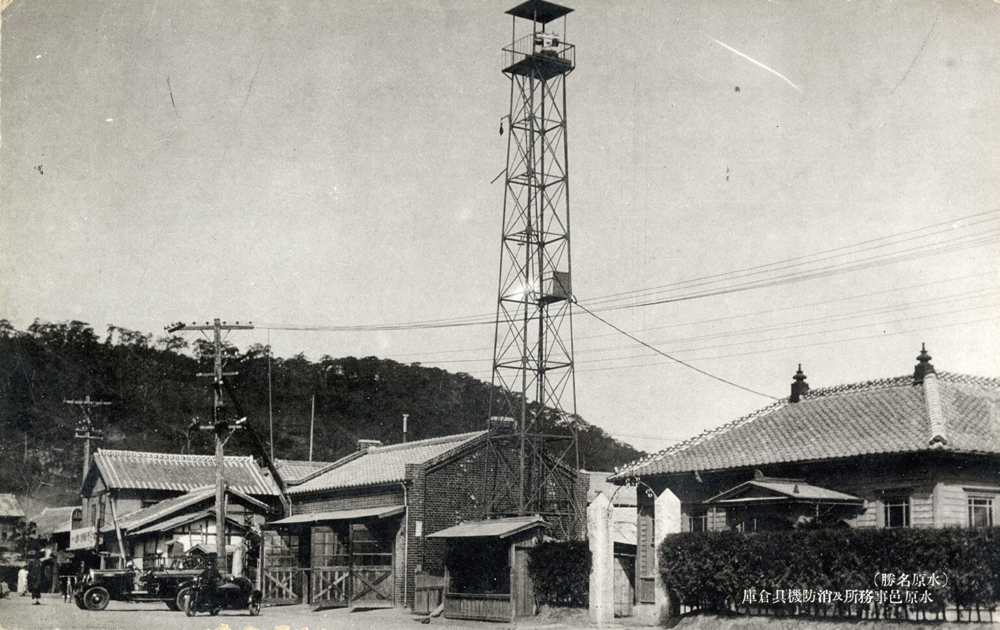
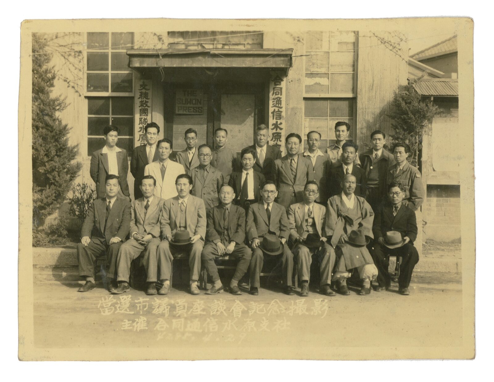
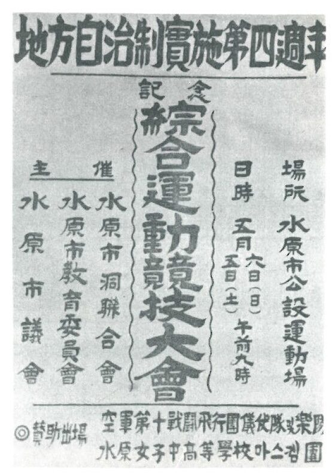
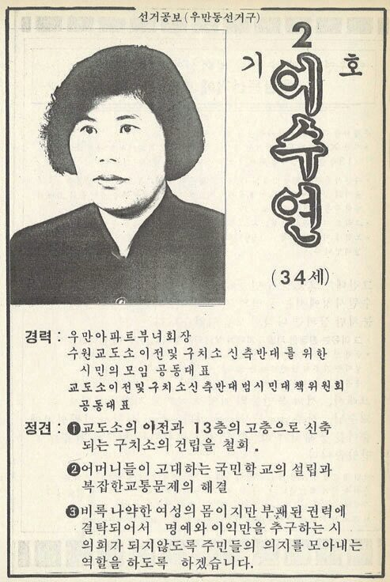
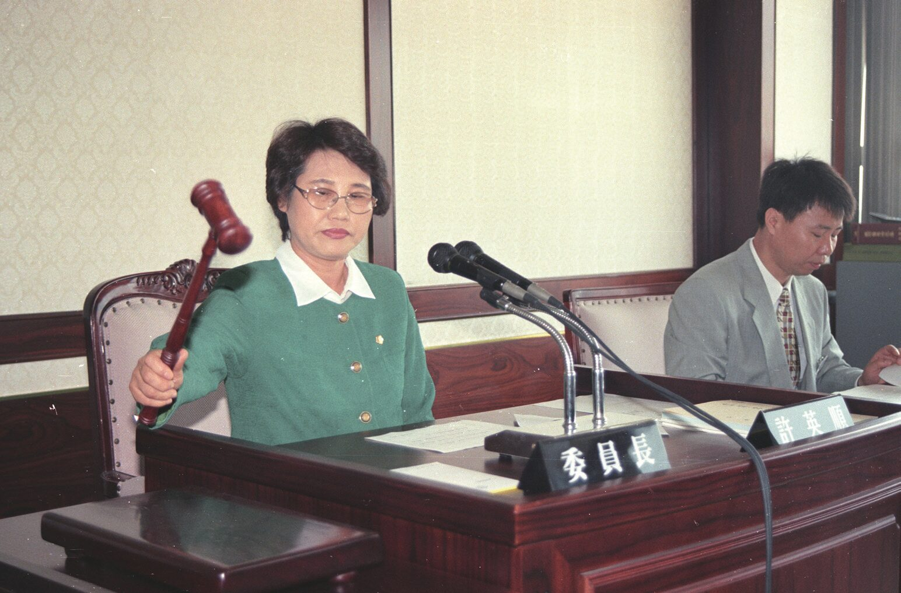

시대를 닮은 의원들
수원 자치 100년 — 수원은 누구를 대표로 뽑아 왔을까. 면협의회의 자산가부터 부녀회장 출신 여성 의원까지, 다섯 개의 장면으로 따라갑니다.
자치와 통치,
그리고 정치
태초의 정치는 자치일 수밖에 없다.
아테네 민주정은 지도자를 투표가 아니라 추첨으로 선발했고, 위험한 인물은 투표(도편추방)로 공동체 밖으로 내보냈다. 근대 민주주의는 추첨 대신 선거를 택했고, 대의제는 공동체 구성원 중 ‘우월한 자’를 선별하는 장치가 되었다.
그렇다면 수원은 누구를 대표로 뽑아 왔을까.
자산가의 의회
3·1운동 이후 총독부는 1920년 지방자치제를 시행했다.
1917년 지정면이 된 수원면에도 면협의회가 설치되었지만, 투표권은 일정한 세금을 내는 이들에게만 주어진 제한선거였다. 1931년 수원면이 수원읍으로 승격하면서 면회는 읍회가 되었고, 정원 12명은 조선인과 일본인 각 6명이었다. 1939년 선거에서는 14명 중 8명이 조선인이었다.
1929년 당선자 중 이길태는 17세, 홍사선·윤태인은 20세, 이완선은 21세였다.
1929년 제3회 면협의원 선거, 투표할 수 있었던 사람
수원면 인구 11,042명 · 점 하나 = 인구의 1%



홍사선
1928~1932년 4~5년 사이 누룩사업, 수원하주운송조합, 수원하주운송(주), 농업회사 만종원 등 네 개 회사를 번갈아 설립했다. 해산 시 미수금 1만 2,000원을 경영난의 삼일학교에 기증했다.
“농업의 진흥만이 수원의 살 길”
이한승
수원의 일류 재산가였으나 수재 의연금 모금을 ‘미친 짓’이라 매도하고 단돈 1원을 기부해 비판받았다.
전쟁 직후의
첫 시의회
1949년 7월 4일 공포된 지방자치법은 전쟁으로 미뤄졌다가, 1952년 첫 시·읍·면의회 선거로 이어졌다.
전국 시의원 선거에서 무소속이 47.5%를 차지했다. 제1대 수원시의회는 20명, 40대가 주축이었다. 대부분 1900년대 초에 태어나 중등 정도의 학력을 갖추었고, 우익 청년단이나 관료 경력을 지녔다.
초대 의회는 도청 유치, 대한방직 유치, 휴전반대 결의안 등에 힘을 쏟았다. 1960년 선거에서 15명이 당선되었으나 5·16 군사쿠데타로 지방자치는 전면 중단되었다.



윤긍렬
부호 윤태정의 장남. 와세다를 수료하고 민족청년단 수원단장을 지냈으며, 4·19 이후 민선시장에 당선되었다.
차인순
경성제2고보 출신으로 정미소를 운영했다. 초대 수원시의회 전기 부의장.
최학배
장남 최종건이 선경직물을 불하받았다 — SK의 출발. 최종건도 제2대 시의원이 되어 ‘부자 시의원’이 되었다.
30년의 공백,
그리고 부활
30년 동안 수원의 정치는 “중앙 정치무대의 지방판”에 그쳤다.
1991년 기초의회 선거로 지방자치가 부활했다. 그사이 수원은 산업화·도시화를 거치며 ‘전국화’되었다. 영호남·충청 출신 이주민이 늘었고, 향우회 네트워크가 새로운 정치 기반이 되었다. 제10대 김진관과 충청향우회가 그 예다.


30년
1961년 5·16 군사쿠데타부터 1991년 기초의회 선거까지, 지방자치가 멈춰 있던 시간.
시대를 닮은
의원들
사람은 아버지보다 시대를 닮는다
— 아랍 속담
1990년대 시의원의 다수는 지역 유지형이었다. 제4대 조명환의 이력에는 라이온스클럽 초대 회장, 새마을운동 수원시지회장, 태권도·역도 협회 등이 줄지어 있다. 관변단체·사회단체·동창회·향우회가 의회로 가는 길이었다.
시의원은 2003년까지 무보수 명예직이었다. 그래서 의원들의 언어는 ‘봉사’였다.
학력 인플레 — 고등교육 이수자 추이
점 하나 = 시의원 1명 · 색칠된 점 = 고등교육 이수자
이종구 · 박우양
이종구는 재건국민운동, 공화당 동 관리장, 새마을금고 이사장을, 박우양은 새마을운동에서 민자당으로 이어지는 길을 걸었다.
이태호 · 김현철
이태호는 민주대학과 버드내 청년회장을 거쳤고, 김현철은 제5대 최연소 의원으로 민주노동당 소속이었다.
가장 낮은
곳에서
제4대 이수연은 수원시의회 첫 여성 의원이다. 우만아파트 부녀회장 출신이었다.
『수원시의회사』는 그를 ‘예쁜 딸’ 같은 젠더화된 시선으로 서술했다. 제5대에는 정금란, 그리고 권선구·팔달구 새마을부녀회장을 거쳐 민자당 팔달지구 지회 부회장이 된 허영순이 의회에 들어왔다.
여성의 정치 진출은 기존 질서를 타고 이루어지는 경우가 많았다.



가장 낮은 곳에 위치했던 여성들이 가장 높은 정치무대로 비상할 수 있다면 그만큼 수원 지역정치의 미래는 밝을 것이다. 물론 이것은 일부 여성들의 출세가 아니라 낮은 곳에 있던 모든 이들의 비상이어야 함은 물론이다.